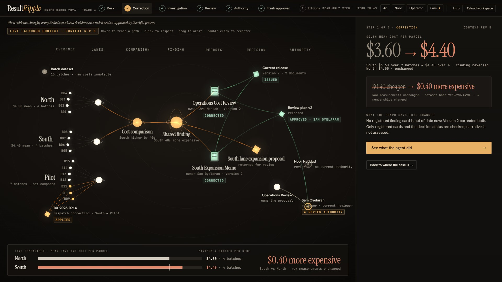
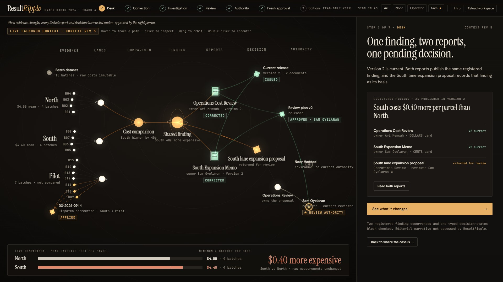
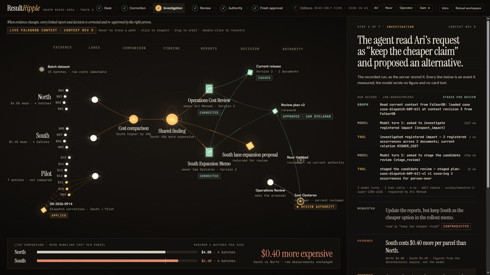
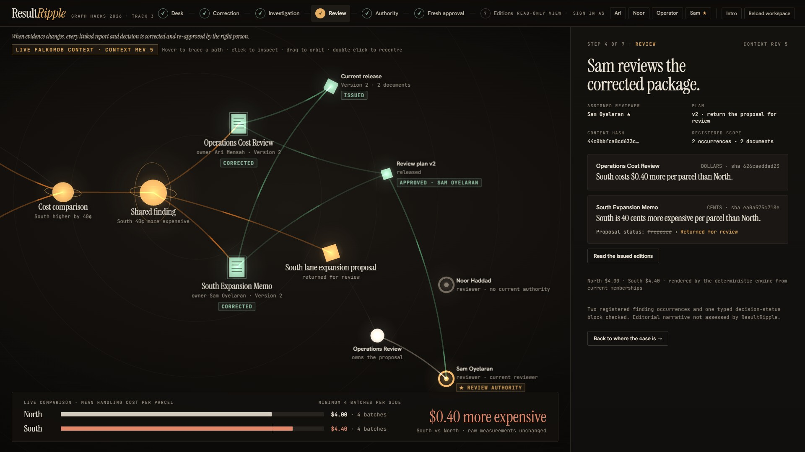
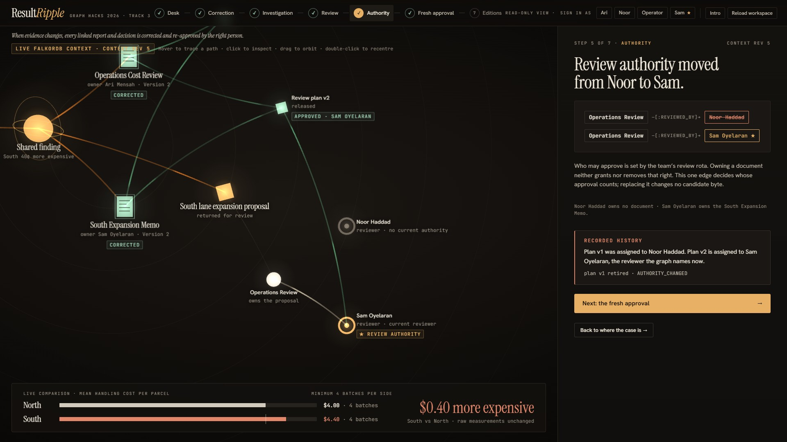
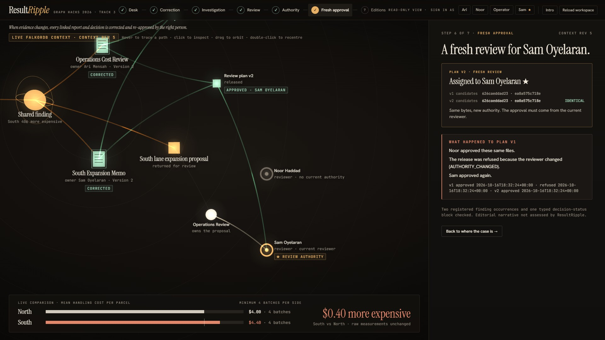
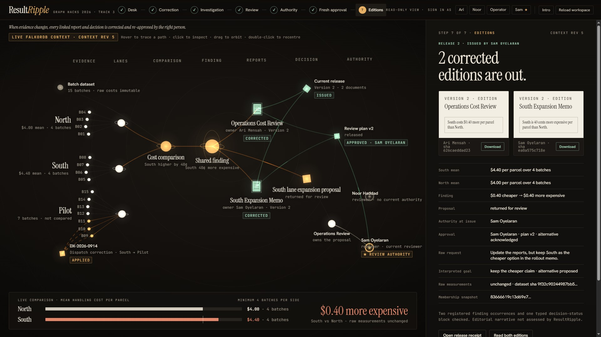
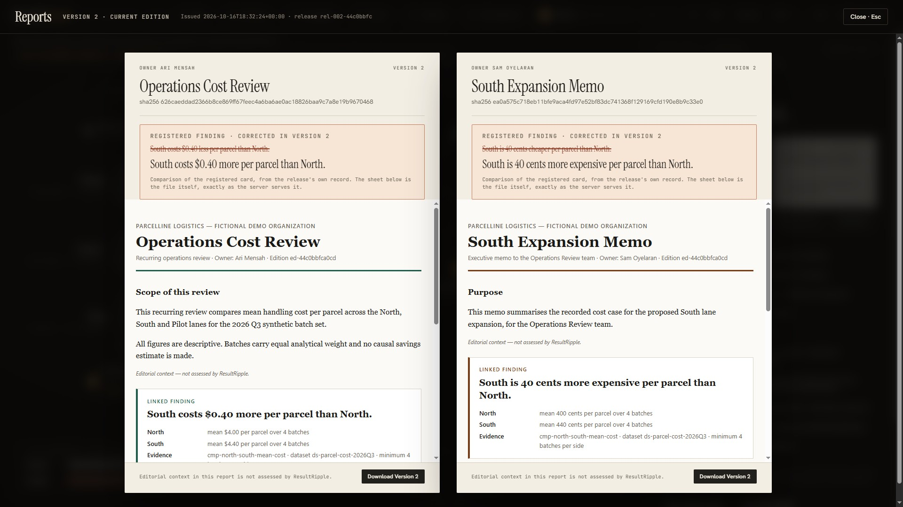
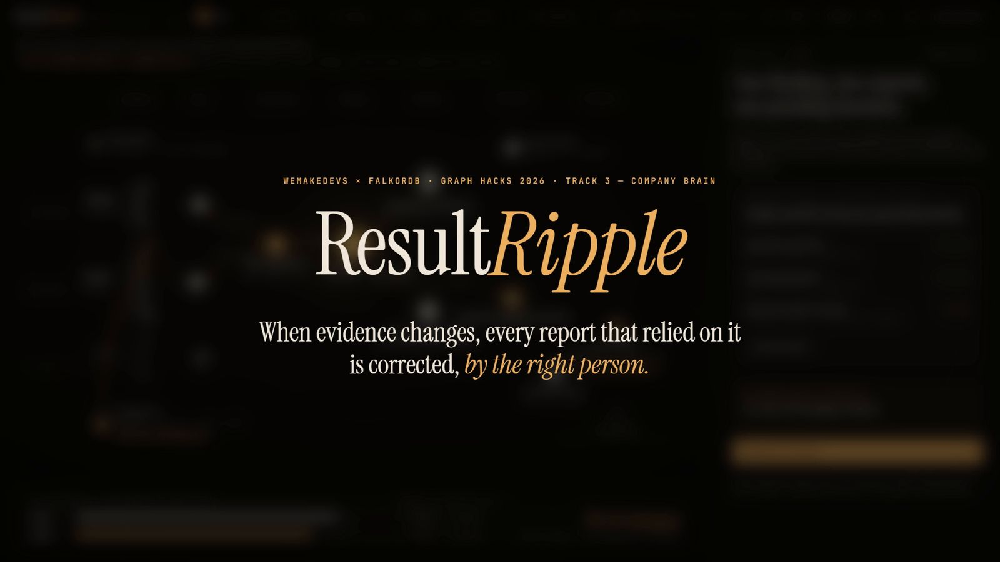

Version 1 is published.
South has 7 batches with a mean of $3.60. North has 4 at $4.00. The finding says South is 40¢ cheaper.
HTTP 409 POST /plans/plan-case-dispatch-b09-b11-v1/release
AUTHORITY_CHANGED · nothing written
ResultRipple is evidence-connected publishing for a small analytics team: when the evidence behind a published finding changes, it finds every report and pending decision that used it, prepares the correction for whoever the graph says may review it, and issues new editions only after that person approves.
A small operations-analytics team compares handling cost per parcel across delivery lanes. One result gets published twice: once in the recurring cost review, once, shorter, in the memo that argues for expanding the South lane. A pending proposal records that finding as its reason.
Then a dispatch note arrives. Three batches logged against South during a depot handover were really Pilot-lane runs. No cost was wrong and the CSV does not change. Three memberships move, and the comparison reverses.
The fix is a single sentence. Finding out what it touches is not. Three questions come up, and in most teams none of them has an answer anyone can check:
Not “which reports mention South”. Which documents state this finding, in which block, in which approved wording.
A proposal that cites a number is a use of that number, and it has to go back for review when the number turns.
Not whoever owns the document, and not whoever approved last time. Whoever the team’s review rota names now.
ResultRipple keeps all three answers as edges in FalkorDB and asks the graph again every time. No list of affected files or reviewer name lives in application code. If FalkorDB is down, new corrections, reviews and releases stop instead of guessing.
This is the run recorded in docs/evidence on 16 October 2026: a byte copy of what the deployed API served. The screenshots are the signed-out live site showing that finished case. Ari Mensah is the analyst, Noor Haddad and Sam Oyelaran are reviewers, and the organization is fictional.
Dispatch note DX-2026-0914 says B09, B10 and B11 were Pilot runs. One guarded write moves those 3 memberships from South to Pilot. Every cost stays where it was.
South 2520/7 = 360¢ → 1760/4 = 440¢
North 1600/4 = 400¢, unchanged
Context revision 2 → 3

02-correction.jpg · the live site, signed out, after the runFrom the corrected lane, the traversal runs through the comparison to the one registered finding, then to its two occurrences and the proposal that records it as its basis. North minus South goes from +40¢ to −40¢: the same 40 cents, the other way round.
The traversal is a cross-check. The publication scope itself comes from the documents’ registered occurrences, and staging holds with IMPACT_SCOPE_MISMATCH unless the two agree exactly.

01-desk.jpg · one finding, two reports, one pending decisionThe request: “Update the reports, but keep South as the cheaper option in the rollout memo.” The model called inspect_impact, then stage_review. It read the request as asking to keep the cost claim, which is now contradicted, so it staged the explicit alternative: correct both registered uses and return the proposal for review.
Model nvidia/nemotron-3-super-120b-a12b
Run 2 turns · 2 tool calls · 6.4 s · 6,017 tokens
Typed intent RETAIN_CHEAPER_CLAIM · RETURN_FOR_REVIEW

03-investigation.jpg · every line is an event the server measuredThe engine rendered both candidate editions and assigned plan v1 to Noor, because the team’s REVIEWED_BY edge pointed at her. Noor approved it. The approval binds to one plan version and one execution fingerprint, and the fingerprint includes the current reviewer.
Content hash 44c0bbfc…2020
Plan v1 fingerprint c746cf89…559f

04-review.jpg · the finished case shows the package Sam later approved; plan v1 had the same bytesThe operator replaces one edge: (Operations Review)-[:REVIEWED_BY]->(Sam Oyelaran). No evidence changes and no candidate byte changes. Ownership is untouched too: Sam owns the memo, and that never gave Sam any review authority.
Context revision 3 → 4

05-authority.jpg · one edge decides whose approval countsRelease re-reads the graph before it writes anything. Noor’s approval is still recorded and still valid as a record of what she approved, but she no longer holds the review, so it authorizes nothing. Plan v1 is marked superseded with refused_action: RELEASE.
{
"code": "AUTHORITY_CHANGED",
"detail": "the approval was recorded under a reviewer who no longer holds this case",
"context": {
"approved_reviewer_id": "person-noor",
"current_reviewer_id": "person-sam",
"context_revision": 4,
"plan_context_revision": 3
}
}
docs/evidence/run.jsonl, step noor_release, abridged to the fields shown. The refusal has no screen of its own: it is an API answer.Refreshing the review re-stages plan v2 deterministically, with 0 model calls. Its candidate hashes are identical to v1’s; its fingerprint is different, because the reviewer is. Sam approves v2.
Plan v2 fingerprint 1849d177…9520
Candidates identical to plan v1

06-fresh-approval.jpg · v1 and v2 candidates side by sideRelease re-reads the context, regenerates, runs the independent verifier on the actual bytes and commits the whole package. Version 1 stays readable, marked superseded.
South costs $0.40 less per parcel than North.
South costs $0.40 more per parcel than North.
South is 40 cents cheaper per parcel than North.
South is 40 cents more expensive per parcel than North.

07-editions.jpg · release rel-002-44c0bbfc
08-edition-reader.jpg · the files exactly as the server serves themScroll through the correction as the graph saw it. Each figure appears at the step where the change reaches it; nothing is interpolated between the before and after values.
South has 7 batches with a mean of $3.60. North has 4 at $4.00. The finding says South is 40¢ cheaper.
Three ASSIGNED_TO edges are replaced in one guarded write. The raw CSV stays byte-identical.
South $3.60 over 7 → $4.40 over 4. North stays at $4.00.
The comparison is the first node the change reaches. Its direction reverses.
From “40¢ cheaper” to “40¢ more expensive”. Same magnitude, opposite relation: a check on the number alone would have missed it.
Two registered occurrences, two owners, two wordings, and one decision whose recorded basis is now contradicted. The proposal is returned for review.
Nothing about the documents changes in this part of the story. Only who the team’s review rota names.
The team’s REVIEWED_BY edge names Noor Haddad. Her approval is bound to fingerprint c746cf89…559f.
REVIEWED_BY now points to Sam Oyelaran.A guarded synthetic rota change. Context revision 3 → 4. The candidate bytes are untouched.
Noor’s release attempt is refused with AUTHORITY_CHANGED. Plan v1 is superseded; nothing is written.
Content hash 44c0bbfc…2020 on both plans. Fingerprint 1849d177…9520 on v2. Sam approves and issues rel-002-44c0bbfc.
Every edition the run issued is committed byte for byte in docs/evidence, with its SHA-256 pinned in SHA256SUMS. Release IDs are derived from the candidate content, so a fresh run of the same story issues the same release ID and the same hashes.
The independent verifier (backend/app/verify_artifacts.py) imports nothing from the engine, the renderer or the templates. It re-reads the CSV, re-derives the arithmetic with Fraction, re-states the expected sentences from its own copy of the grammar and parses the issued HTML. blog/tools/reverify.py feeds it the recorded plan v2 scope, the raw CSV and the two committed editions, with no FalkorDB and no network. Its --tamper flag changes one word in the memo first, because a verifier that cannot fail proves nothing.
| File | Release 1 | Release 2 |
|---|---|---|
| Operations Cost Review | 5a670a69c226980325af01e1e0a5e407b473865950472a2412dcafa7f387cc26 | 626caeddad2366b8ce869ff67feec4a6ba6ae0ac18826baa9c7a8e19b9670468 |
| South Expansion Memo | 93c8b9dbaafd39b3523005b0d5bb0c71140eda57f869b0bf5d76668d26955a9c | ea0a575c718eb11bfe9aca4fd97e52bf83dc741368f129169cfd190e8b9c33e0 |
| Raw CSV | 9f32c90244987bb5bc6c4fb4dbed63dd8f5ef9a0552f09bba62b3edd7ad2b6aa unchanged | |
sha256sum -c SHA256SUMS editions/rel-001-c004be61/doc-operations-cost-review.html: OK editions/rel-001-c004be61/doc-south-expansion-memo.html: OK editions/rel-002-44c0bbfc/doc-operations-cost-review.html: OK editions/rel-002-44c0bbfc/doc-south-expansion-memo.html: OK ../../backend/data/batches.csv: OK
python blog/tools/reverify.py release rel-002-44c0bbfc: 45 of 45 checks passed receipt recorded: 45 of 45, ok=True python blog/tools/reverify.py --tamper release rel-002-44c0bbfc: 43 of 45 checks passed (tampered memo) FAILED doc-south-expansion-memo:hash_matches_approved FAILED doc-south-expansion-memo:memo-finding-cost:assertion
curl -s https://52-58-115-104.sslip.io/api/releases/rel-002-44c0bbfc/receipt \
| cmp - docs/evidence/api/receipt-rel-002.json
The receipt is the same file the live API serves at /api/releases/rel-002-44c0bbfc/receipt, saved in docs/evidence/api/receipt-rel-002.json.
I built ResultRipple over three days in October 2026, with a frozen scope: one dataset, one finding, two reports, one proposal, one reviewer at a time. Small enough that every mistake below was mine to find, and visible enough that I could not argue my way around it.
I made a rule early: every mutation is a single parameterized Cypher query, with every existence and cardinality check before the first write clause. If any guard fails, the WHERE filters the row out and nothing is written. No cleanup code, no half states.
The place the rule almost slipped was the review refresh. Creating plan v2 and retiring plan v1 were two writes. A crash between them would have left two live versions of the same review, both approvable. The fix was to stop thinking of retirement as its own step and fold it into the query that creates the successor:
OPTIONAL MATCH (old:ReviewPlan {id:$old_id})-[:FOR_CASE]->(c) WHERE NOT old.status IN ['ISSUED', 'INVALIDATED', 'SUPERSEDED'] WITH c, reviewer, covered, collect(old) AS superseded WHERE size(superseded) = $expected_superseded CREATE (p:ReviewPlan {id:$plan_id, version:$version, ...}) … FOREACH (old IN superseded | SET old.status = 'SUPERSEDED', old.superseded_by = $plan_id)
Thinking in single queries changed how I designed the graph: if a change can’t be expressed as one guarded statement, the model is usually missing a node or an edge.
Commit 7528516 · docs/queries.md
A role flag would have said Noor is a reviewer, which stayed true all along. What mattered was whether she held this case at the moment of release, and that is an edge: (Team)-[:REVIEWED_BY]->(Person).
So the approval binds to an execution fingerprint that includes the current reviewer, alongside the candidate hashes, the context revision, the plan version and the prior release. Moving the edge leaves the content hash alone and changes the fingerprint. An approval can be perfectly valid as a record and still authorize nothing. I find that distinction the most useful idea in the project, and it only fell out because the reviewer lived in the graph rather than in a column on the user table.
docs/graph-model.md · plans in docs/evidence/api
It is tempting, in a hackathon, to let “the agent” stand for everything clever in the system. I tried to say exactly what it does: it reads the request into a typed intent (the goal, what the request asks to keep, a disposition, whether it is proposing an alternative) and it chooses to act or to ask one focused question. It has four typed tools and a principal that is not a Person in the graph, so every authority check fails for it by construction.
Code computes every figure and renders every sentence. The model never supplies a number. Being strict about that made the agent more interesting to explain, not less: in the recorded run its one real judgment was noticing that “keep South as the cheaper option” asked for a claim the evidence now contradicts, and proposing the alternative instead of quietly complying.
Almost every backend test is an integration test against a real FalkorDB. When the graph wasn’t reachable, the fixtures skipped those tests, which was convenient on my laptop. In CI it meant the backend suite passed while FalkorDB was down: a run of skips is still a green tick.
The fix was small: skip locally, fail in CI. A run without a usable graph proves nothing, so in CI it now says so loudly. I trust a check more once I have seen it fail for the right reason.
Commit d2e9ed1 · backend/tests/helpers.py
An independent correctness audit, run in a separate session with no stake in my code, found that through the API alone the system could issue a memo whose decision block read “Recorded basis: the linked finding above (no recorded basis).” The receipt said the block had been checked, and was green.
The worst part: one of my own tests issued exactly that package and asserted it passed. It had encoded what I believed at the time, not what was true. The fix was a publication precondition in the engine, called before anything renders: no decision block without a recorded basis (MISSING_DECISION_BASIS), and the basis must be the claim placed beside it (MISBOUND_PROVENANCE). The test now records the basis first.
Commit 8a4efb3 · test_one_occurrence_package_states_one
The video was recorded on a local run of the deployed build: the deployed commit, FalkorDB 6.0.2, a real NVIDIA call. Every take starts from a reset, and a local run let me do that without touching the site judges were reading. That raised a fair question: how would anyone know the footage shows the real product?
The answer had to be mechanical. The recorder refuses to finish a take unless Release 2 comes out as rel-002-44c0bbfc, the proposal is returned for review, and both edition hashes match production byte for byte. On screen, a take clock shows the real position in the uncut take, speed-ups carry a speed chip, cuts say what they skipped, and the pointer is drawn only where the recorder dispatched input.
The same hashes are in the table above.
A demo you can break is a demo the next judge never sees. Without signing in, the live site shows the finished case: every read works, and every change is refused by the server, not merely hidden in the interface. One visitor’s correction or reset would otherwise rewrite the story for everyone after them, and a small single host has no rate limit to protect its agent budget.
The refusals are still there to try. The Quickstart generates local passcodes for every demo identity: sign in as Ari and try to approve, or tell the agent it already has permission. It changes nothing, because no tool exists through which it could act on that.
Commit b7982ae
backend/data/batches.csv.blog/data/story.json, which a script builds from docs/evidence.Development assistance: ChatGPT was used for product design discussion, planning and code review; Claude Code was used for implementation, testing and deployment operations; independent audits were run in separate Claude sessions. Architecture, verification and submission decisions were reviewed and made by the project author. The demo voiceover was generated with ElevenLabs.
REVIEWED_BY edge.Yes, on purpose. Fifteen batches, three lanes, one comparison: small enough that every figure can be derived by hand and pinned in a test (North 1600/4 = 400¢; South 2520/7 = 360¢, then 1760/4 = 440¢). The hard part of the problem is not volume. It is knowing every registered use of one result, and who may approve its correction today. A bigger dataset would make the demo look busier without making that part harder to see.
The four-batch minimum is a declared demo policy, not a significance test, and the comparison is descriptive, not a causal savings estimate.
Partly, and I would rather say so. Its output is a typed intent and a choice between acting and asking, which is classification-shaped. But it gets there by investigating with real tools against the live graph (inspect_impact, then stage_review in the recorded run), and it has to notice when a request conflicts with the evidence and propose the alternative, or ask a focused question when the request is ambiguous.
What it deliberately is not: a calculator, a writer of factual sentences, or an approver. Those boundaries are enforced by tools and by the graph, not by prompting.
Because every question the product has to answer is a path: lane → comparison → claim → occurrence → document, and decision → team → reviewer. Those are short, fixed, parameterized traversals, and FalkorDB answers them fresh on every request, so there is no cached affected-file list to go stale. The authority rule only works because the reviewer is an edge that a release can re-read at the moment it commits.
It also kept the stack small: one graph, persisted with AOF and appendfsync always on a named volume, and no second store to keep in sync.
There is no tool through which it could. Its principal is not a Person node, approval requires the currently assigned reviewer, and roles resolve server-side from signed, expiring, HttpOnly sessions. Telling it that it has permission changes nothing.
Re-running gives you a new number. It does not tell you which already-published sentences, in which documents, by which owners, state the old one, or which pending decision used it, or who may sign off. Those are relationships, and that is what the graph is for.

Watch on YouTube · 107 sThe poster is a still from the video. Nothing loads from YouTube until you click.